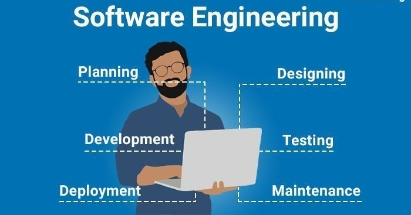

Nothing in life is to be feared, it is only to be understood. Now is the time to understand more, so that we may fear less.
DOWNLOAD RESUMEUse GenAI to deeply understand and anticipate customer needs, driving the development of products that truly resonate and enhance customer satisfaction.By building scalable, resilient AI platforms and facilitating AI integration across enterprises, we deliver significant business value with data-driven and AI-powered products and strategies.
Focused on building and maintaining RESTful APIs using FastAPI and Django.Also worked on Several core systems involving API development,ORM-based database interaction and end-to-end integration of backend services.Contributed in debugging and enhancing performance across microservices and managed database schema design and optimization. Apart from Backend familiar with version control, Docker, Kubernates and deployment process using Microsoft Azure.
∗ Built a real-time sign language interpreter that recognizes hand gestures and converts them into spoken language. Helped bridge communication gaps for the deaf and mute. Processed video input in real time using OpenCV and MediaPipe using OpenCV,Python. Used KNN algorithm for classification of hand gestures. Converted predicted signs into text and audio output using pandas,numpy,pyttsx3.